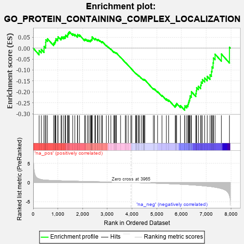
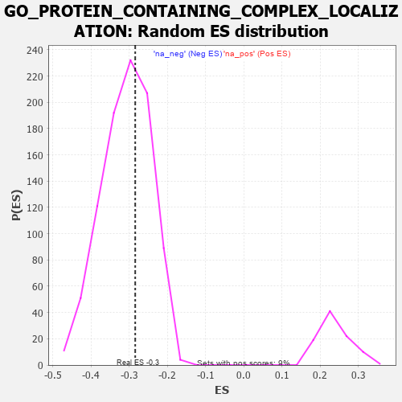

| | | Dataset | 7d |
| Phenotype | NoPhenotypeAvailable |
| Upregulated in class | na_neg |
| GeneSet | GO_PROTEIN_CONTAINING_COMPLEX_LOCALIZATION |
| Enrichment Score (ES) | -0.2841859 |
| Normalized Enrichment Score (NES) | -0.9238209 |
| Nominal p-value | 0.6085998 |
| FDR q-value | 0.9306728 |
| FWER p-Value | 1.0 |
Table: GSEA Results Summary

Fig 1: Enrichment plot: GO_PROTEIN_CONTAINING_COMPLEX_LOCALIZATION
Profile of the Running ES Score & Positions of GeneSet Members on the Rank Ordered List
| PROBE | GENE SYMBOL | GENE_TITLE | RANK IN GENE LIST | RANK METRIC SCORE | RUNNING ES | CORE ENRICHMENT | | 1 | SRSF9 | | | 240 | 0.950 | -0.0107 | No |
| 2 | NUP85 | | | 329 | 0.772 | -0.0057 | No |
| 3 | CPSF2 | | | 440 | 0.666 | -0.0058 | No |
| 4 | XPOT | | | 441 | 0.665 | 0.0081 | No |
| 5 | NUP54 | | | 505 | 0.627 | 0.0132 | No |
| 6 | THOC1 | | | 507 | 0.627 | 0.0262 | No |
| 7 | NMD3 | | | 513 | 0.625 | 0.0386 | No |
| 8 | MX1 | | | 578 | 0.604 | 0.0430 | No |
| 9 | RAE1 | | | 827 | 0.524 | 0.0224 | No |
| 10 | NOL6 | | | 870 | 0.514 | 0.0278 | No |
| 11 | NSUN2 | | | 901 | 0.506 | 0.0346 | No |
| 12 | EXOC3 | | | 918 | 0.503 | 0.0431 | No |
| 13 | NOP9 | | | 993 | 0.485 | 0.0438 | No |
| 14 | CPSF1 | | | 1005 | 0.482 | 0.0525 | No |
| 15 | NUP93 | | | 1127 | 0.459 | 0.0467 | No |
| 16 | NUP43 | | | 1160 | 0.453 | 0.0520 | No |
| 17 | CPSF3 | | | 1237 | 0.440 | 0.0516 | No |
| 18 | THOC3 | | | 1297 | 0.430 | 0.0531 | No |
| 19 | THOC6 | | | 1316 | 0.426 | 0.0597 | No |
| 20 | FKBP4 | | | 1390 | 0.412 | 0.0590 | No |
| 21 | EXOC1 | | | 1403 | 0.409 | 0.0660 | No |
| 22 | NUP88 | | | 1429 | 0.404 | 0.0713 | No |
| 23 | U2AF2 | | | 1466 | 0.396 | 0.0750 | No |
| 24 | LCA5L | | | 1598 | 0.374 | 0.0661 | No |
| 25 | TNPO1 | | | 1684 | 0.359 | 0.0628 | No |
| 26 | NUP58 | | | 1787 | 0.340 | 0.0569 | No |
| 27 | THOC2 | | | 1796 | 0.338 | 0.0630 | No |
| 28 | NUP62 | | | 1871 | 0.324 | 0.0603 | No |
| 29 | LRRC7 | | | 2080 | 0.294 | 0.0400 | No |
| 30 | CPSF4 | | | 2118 | 0.288 | 0.0413 | No |
| 31 | THOC7 | | | 2198 | 0.277 | 0.0371 | No |
| 32 | SRSF1 | | | 2252 | 0.267 | 0.0359 | No |
| 33 | SRSF4 | | | 2311 | 0.258 | 0.0339 | No |
| 34 | SEC13 | | | 2330 | 0.256 | 0.0370 | No |
| 35 | U2AF1 | | | 2359 | 0.252 | 0.0387 | No |
| 36 | SYMPK | | | 2381 | 0.248 | 0.0412 | No |
| 37 | SLU7 | | | 2382 | 0.248 | 0.0464 | No |
| 38 | NCBP2 | | | 2383 | 0.248 | 0.0516 | No |
| 39 | SARNP | | | 2496 | 0.227 | 0.0421 | No |
| 40 | NUMB | | | 2519 | 0.224 | 0.0439 | No |
| 41 | NXF1 | | | 2597 | 0.214 | 0.0386 | No |
| 42 | NUP50 | | | 2625 | 0.209 | 0.0395 | No |
| 43 | SRSF3 | | | 2696 | 0.199 | 0.0348 | No |
| 44 | RIOK2 | | | 2775 | 0.187 | 0.0288 | No |
| 45 | ATR | | | 2800 | 0.183 | 0.0295 | No |
| 46 | XPO1 | | | 2960 | 0.156 | 0.0126 | No |
| 47 | ABCE1 | | | 3051 | 0.143 | 0.0041 | No |
| 48 | SMG7 | | | 3141 | 0.131 | -0.0045 | No |
| 49 | NUP98 | | | 3261 | 0.112 | -0.0173 | No |
| 50 | SMG5 | | | 3285 | 0.108 | -0.0179 | No |
| 51 | RAB8A | | | 3319 | 0.102 | -0.0200 | No |
| 52 | RBM8A | | | 3355 | 0.096 | -0.0224 | No |
| 53 | SMAD7 | | | 3369 | 0.093 | -0.0221 | No |
| 54 | LSG1 | | | 3534 | 0.070 | -0.0415 | No |
| 55 | CASC3 | | | 3727 | 0.037 | -0.0652 | No |
| 56 | SRSF2 | | | 3759 | 0.033 | -0.0684 | No |
| 57 | SMG1 | | | 3843 | 0.021 | -0.0785 | No |
| 58 | GPC6 | | | 3950 | 0.002 | -0.0920 | No |
| 59 | VPS35 | | | 3989 | -0.006 | -0.0967 | No |
| 60 | MZT1 | | | 4145 | -0.032 | -0.1157 | No |
| 61 | STX7 | | | 4147 | -0.033 | -0.1152 | No |
| 62 | AP2B1 | | | 4185 | -0.039 | -0.1190 | No |
| 63 | ENY2 | | | 4195 | -0.041 | -0.1193 | No |
| 64 | RRS1 | | | 4256 | -0.051 | -0.1259 | No |
| 65 | PCID2 | | | 4258 | -0.051 | -0.1250 | No |
| 66 | RAN | | | 4299 | -0.059 | -0.1288 | No |
| 67 | GRIP2 | | | 4372 | -0.071 | -0.1365 | No |
| 68 | SETD2 | | | 4443 | -0.084 | -0.1436 | No |
| 69 | KIF3B | | | 4450 | -0.085 | -0.1426 | No |
| 70 | NXF2 | | | 4484 | -0.092 | -0.1449 | No |
| 71 | HIP1 | | | 4485 | -0.092 | -0.1430 | No |
| 72 | NPTN | | | 4519 | -0.098 | -0.1451 | No |
| 73 | DLG1 | | | 4860 | -0.169 | -0.1848 | No |
| 74 | IFT43 | | | 4907 | -0.179 | -0.1869 | No |
| 75 | PURA | | | 5032 | -0.205 | -0.1984 | No |
| 76 | ATM | | | 5210 | -0.249 | -0.2157 | No |
| 77 | DLG4 | | | 5388 | -0.293 | -0.2321 | No |
| 78 | KIF3A | | | 5480 | -0.313 | -0.2372 | No |
| 79 | MX2 | | | 5745 | -0.390 | -0.2626 | No |
| 80 | SRRM1 | | | 5775 | -0.398 | -0.2580 | No |
| 81 | IFT46 | | | 5802 | -0.406 | -0.2528 | No |
| 82 | AGFG1 | | | 5955 | -0.457 | -0.2626 | No |
| 83 | DLG2 | | | 6126 | -0.513 | -0.2735 | Yes |
| 84 | IFT80 | | | 6135 | -0.515 | -0.2637 | Yes |
| 85 | LCA5 | | | 6213 | -0.540 | -0.2623 | Yes |
| 86 | AP3D1 | | | 6261 | -0.558 | -0.2566 | Yes |
| 87 | IFT52 | | | 6280 | -0.566 | -0.2470 | Yes |
| 88 | IFT57 | | | 6307 | -0.579 | -0.2383 | Yes |
| 89 | IFT88 | | | 6335 | -0.590 | -0.2294 | Yes |
| 90 | IFT27 | | | 6348 | -0.596 | -0.2184 | Yes |
| 91 | RALB | | | 6399 | -0.617 | -0.2119 | Yes |
| 92 | IFT22 | | | 6400 | -0.617 | -0.1990 | Yes |
| 93 | RPGR | | | 6579 | -0.699 | -0.2070 | Yes |
| 94 | TPR | | | 6597 | -0.709 | -0.1944 | Yes |
| 95 | TUB | | | 6611 | -0.718 | -0.1810 | Yes |
| 96 | CPLX1 | | | 6684 | -0.753 | -0.1745 | Yes |
| 97 | NXT1 | | | 6774 | -0.797 | -0.1691 | Yes |
| 98 | WDR19 | | | 6796 | -0.812 | -0.1548 | Yes |
| 99 | CEP72 | | | 6846 | -0.839 | -0.1435 | Yes |
| 100 | GHSR | | | 6937 | -0.894 | -0.1363 | Yes |
| 101 | ARL3 | | | 7041 | -0.963 | -0.1293 | Yes |
| 102 | WDR60 | | | 7153 | -1.038 | -0.1217 | Yes |
| 103 | IFT74 | | | 7211 | -1.085 | -0.1063 | Yes |
| 104 | WDR34 | | | 7233 | -1.103 | -0.0859 | Yes |
| 105 | IFT81 | | | 7277 | -1.151 | -0.0673 | Yes |
| 106 | KIF17 | | | 7291 | -1.160 | -0.0448 | Yes |
| 107 | WDR35 | | | 7357 | -1.225 | -0.0274 | Yes |
| 108 | IWS1 | | | 7613 | -1.587 | -0.0267 | Yes |
| 109 | WDR33 | | | 7939 | -3.452 | 0.0041 | Yes |
Table: GSEA details [plain text format]

Fig 2: GO_PROTEIN_CONTAINING_COMPLEX_LOCALIZATION: Random ES distribution
Gene set null distribution of ES for GO_PROTEIN_CONTAINING_COMPLEX_LOCALIZATION